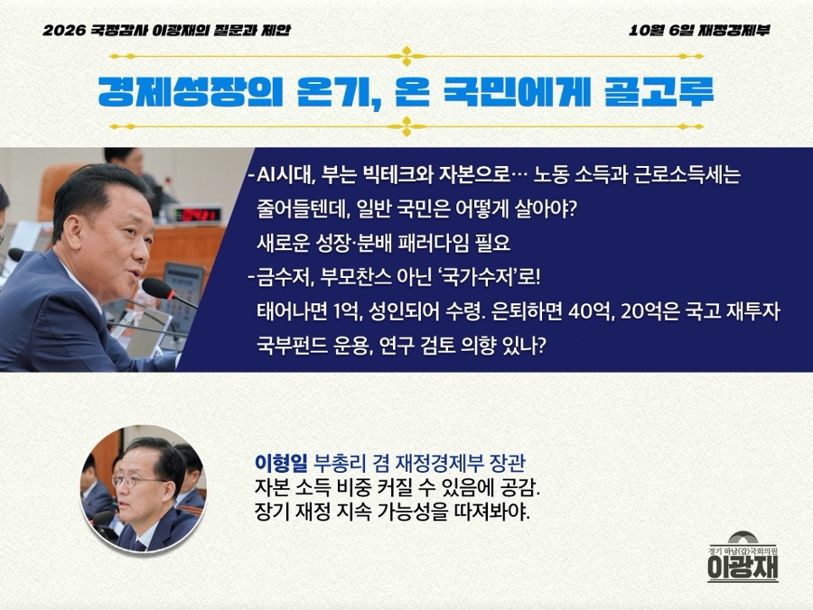
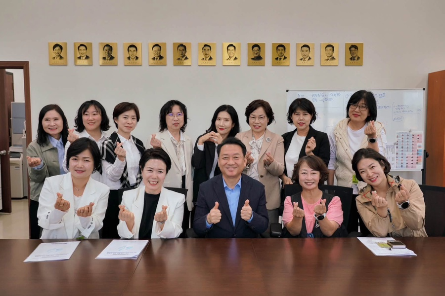
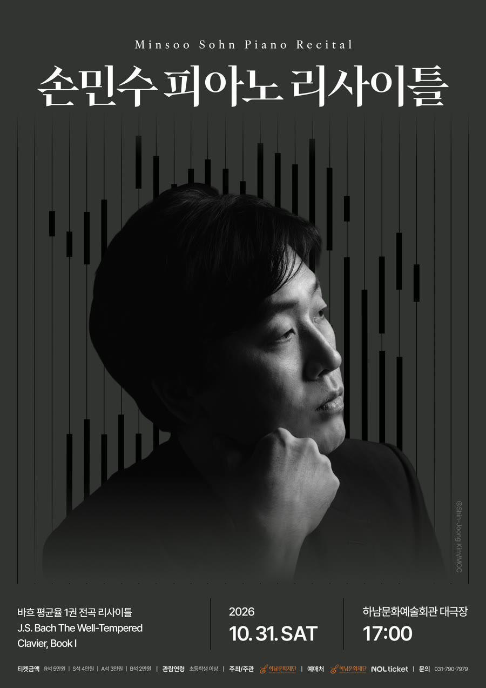
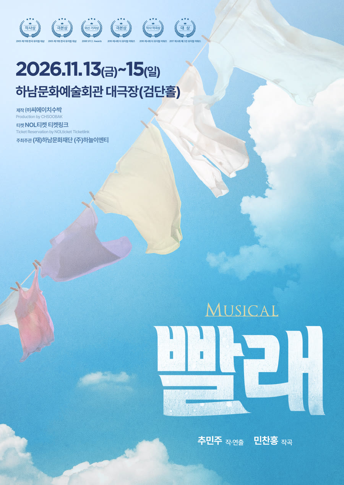
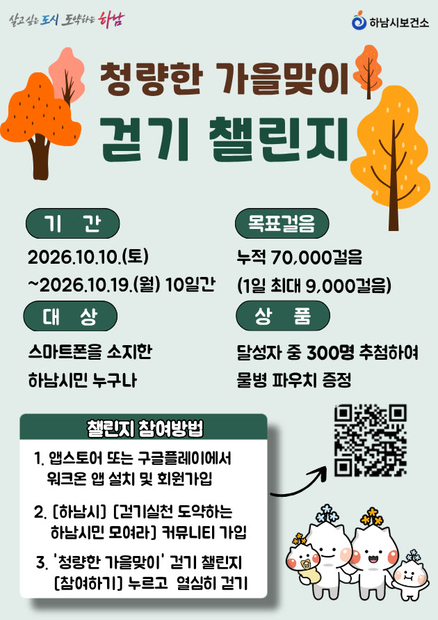
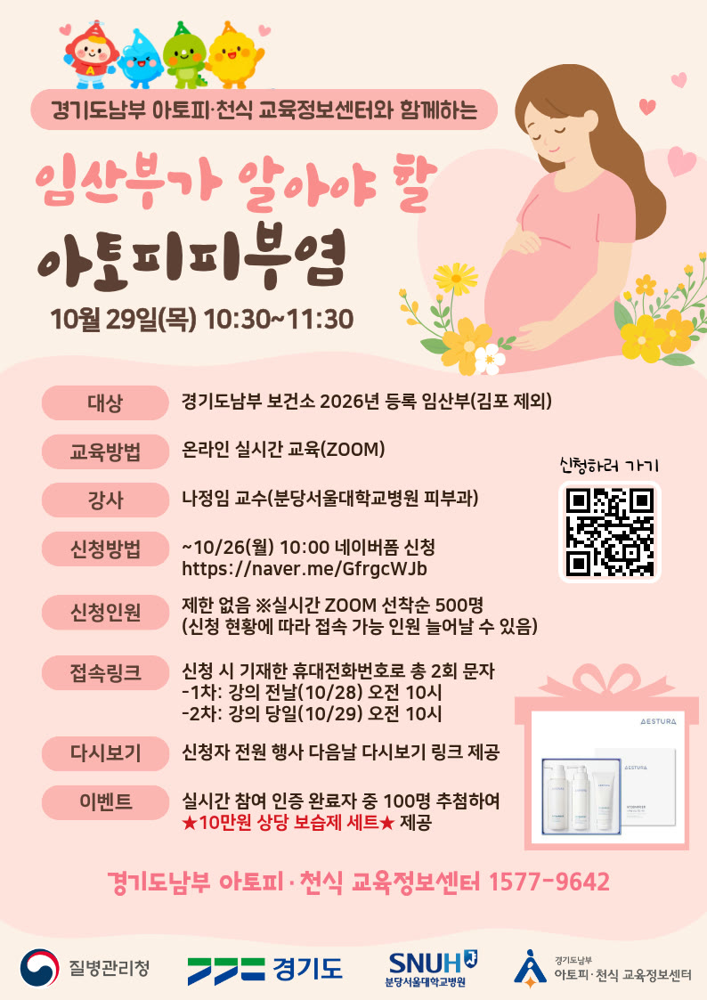

54호 | 2026년 10월 8일 발행
📌 이번 호 주요 목차
 우리동네 국회의원 이광재
우리동네 국회의원 이광재
📝 현장일지
이광재의원, 국정감사 첫날 "경제성장의 온기, 온 국민에게 골고루"… 버려지는 포인트로 동네가게 살리자
• 10월 6일 재정경제기획위원회 국정감사 1일차, 재정경제부 상대 질의
• AI 시대 부가 빅테크·자본에 쏠리는 문제 지적, 새로운 성장·분배 패러다임 요구
• '금수저·부모찬스' 아닌 '국가수저' — 국부펀드로 생애 자산 형성 지원 제안
• 버려지는 마일리지·포인트를 지역사랑상품권으로 바꿔 소상공인 지원 제안
• 알래스카 LNG, 북극항로·한반도 평화까지 아우르는 국가 전략 먼저 세워야
• AI 시대 부가 빅테크·자본에 쏠리는 문제 지적, 새로운 성장·분배 패러다임 요구
• '금수저·부모찬스' 아닌 '국가수저' — 국부펀드로 생애 자산 형성 지원 제안
• 버려지는 마일리지·포인트를 지역사랑상품권으로 바꿔 소상공인 지원 제안
• 알래스카 LNG, 북극항로·한반도 평화까지 아우르는 국가 전략 먼저 세워야

📌 출처: 이광재 공식 네이버 블로그
📝 현장일지
이광재의원 "보육 선생님이 행복해야 아이들도 행복합니다"… 한국어린이집총연합회 간담회
• 한국어린이집총연합회와 만나 보육 현장의 목소리 청취
• 보육의 최전선에 선 어린이집 선생님 처우부터 확실하게 개선 약속
• 영아반 교사 대 아동 비율을 줄이는 방안 모색
• 어린이집 급간식비 국가 지원 시작 필요성 강조
• "선생님이 행복해야 아이들이, 아이들이 행복해야 부모님이 안심"
• 보육의 최전선에 선 어린이집 선생님 처우부터 확실하게 개선 약속
• 영아반 교사 대 아동 비율을 줄이는 방안 모색
• 어린이집 급간식비 국가 지원 시작 필요성 강조
• "선생님이 행복해야 아이들이, 아이들이 행복해야 부모님이 안심"

📌 출처: 이광재 공식 네이버 블로그
📰 언론보도
[조세일보] 이광재의원 "감세 논쟁 아닌 낡은 세제의 현대화"… 국민의힘 박수영 의원도 "크게 환영"
• 2일 대표발의한 '과세기준 현실화 촉구 결의안'에 국민의힘 박수영 의원이 7일 기자회견으로 화답
• 30년 묶인 양도세 기본공제, 29년째 동결된 상속세 공제, 10년째 제자리인 증여공제 현실화 촉구
• G7 선진국처럼 소득세 '물가연동제' 도입 제안
• "과도한 세금보다 가처분소득을 늘리는 선순환 국가로"
• 여야 정책통이 한목소리, 실제 세제개편 반영 주목
• 30년 묶인 양도세 기본공제, 29년째 동결된 상속세 공제, 10년째 제자리인 증여공제 현실화 촉구
• G7 선진국처럼 소득세 '물가연동제' 도입 제안
• "과도한 세금보다 가처분소득을 늘리는 선순환 국가로"
• 여야 정책통이 한목소리, 실제 세제개편 반영 주목
📌 출처: 조세일보
📰 언론보도
[경기신문] 이광재의원 "낡은 화장실·급식실·책걸상부터 바꾸자"… 경기 노후 학교 1,768동 전국 최다
• 교육부 자료 분석 — 전국 학교 건물 39.1%(1만 3,206동)가 지은 지 30년 넘어
• 경기도 노후 학교 건물 1,768동으로 전국 최다
• 교육환경 개선 예산은 세수 따라 들쭉날쭉 (2023년 12.2조 → 지난해 8.8조 원)
• 미래대응기금 투입·장기 학교 현대화 로드맵 마련 촉구
• "현장에서 체감할 수 있는 데부터 돈을 쓰자"
• 경기도 노후 학교 건물 1,768동으로 전국 최다
• 교육환경 개선 예산은 세수 따라 들쭉날쭉 (2023년 12.2조 → 지난해 8.8조 원)
• 미래대응기금 투입·장기 학교 현대화 로드맵 마련 촉구
• "현장에서 체감할 수 있는 데부터 돈을 쓰자"
📌 출처: 경기신문 (김태호 기자)
📰 언론보도
[에너지경제] 이광재의원 "대화·타협으로 예산 법정 시한 반드시 지켜야"… 예결위원장 단독 인터뷰
• 예산안 법정 처리 시한 준수를 국민과의 첫째 약속으로 꼽아
• 시한을 넘기면 피해는 국민과 지자체에 돌아가
• 여야 발언 시간·장관 답변 시간을 늘려 충분한 대화 보장 제안
• 민생 대신 자극적 언어에 쏟는 정쟁은 "국력낭비, 고성방가"
• 국가 예산·연기금·국공유자산·금융자본 '4대 돈주머니' 통합 운용 제안
• 시한을 넘기면 피해는 국민과 지자체에 돌아가
• 여야 발언 시간·장관 답변 시간을 늘려 충분한 대화 보장 제안
• 민생 대신 자극적 언어에 쏟는 정쟁은 "국력낭비, 고성방가"
• 국가 예산·연기금·국공유자산·금융자본 '4대 돈주머니' 통합 운용 제안
📌 출처: 에너지경제신문 (이상무 기자)
📰 하남 지역 주요 뉴스
💰 시정/예산
하남시, 내년 예산 1,272억 원 부족… 이광재 예결위원장 등과 손잡고 국·도비 확보 총력
하남시가 2027년도 본예산 편성을 앞두고 재정 확보에 비상이 걸렸습니다. 부서별 요구액을 조사한 결과 쓸 돈(세출)이 들어올 돈(세입)보다 13.1%, 1,272억 원 많은 것으로 나타났습니다. 자체 세입 증가세가 둔화된 데다 도비 보조율이 줄고 복지·인프라 지출은 계속 늘어난 탓입니다. 시는 내부 사업비를 줄이는 것만으로는 한계가 있다고 보고, 국비 보조사업·공모사업·특별교부세 등 외부 재원 확보를 내년 예산의 핵심 전략으로 삼았습니다. 특히 이광재 국회 예결위원장 등 지역 정치권과 정책 협의를 이어가며 지역 현안 사업의 국비 확보 방안을 논의하고 있고, 경기도와는 특별조정교부금 확보와 보조율 조정을 협의할 계획입니다. 아울러 신규 사업은 처음부터 외부 재원 연계 방안을 함께 내도록 하고, 성과가 낮은 사업은 통폐합하며 체납액 징수도 강화합니다.
📌 출처: 메트로신문 (유진채 기자)
🎉 청소년/축제
17일 감일문화공원서 '제3회 감일문화예술축제'… 청소년이 직접 꾸린 체험부스·댄스 경연
하남시 감일청소년문화의집이 오는 10월 17일(토) 감일문화공원에서 청소년과 지역 주민이 함께하는 '제3회 감일문화예술축제'를 엽니다. 이번 축제는 청소년들이 직접 기획하고 운영하는 지역 축제로, 청소년 동아리와 지역 유관기관 등이 참여해 체험부스 10곳을 운영하고 가족 단위 방문객을 위한 피크닉존도 마련합니다. 축제와 함께 '제2회 청소년 댄스 경연대회'도 열리며, 전문 심사위원이 참여하고 스타필드하남과 하남시사회복지협의회가 후원합니다. 김수진 관장은 "청소년과 지역 주민이 함께 웃고 즐기며 축제의 주인공이 되는 뜻깊은 시간이 되길 바란다"고 말했습니다. 세부 일정은 감일청소년문화의집 홈페이지와 인스타그램에서 확인할 수 있습니다.
📌 출처: 스포츠동아 (고문주 기자)
🌉 관광/개발
하남~남양주 한강 출렁다리, 협약 1년 넘었지만 실행은 '제자리'
하남시와 남양주시가 함께 추진하는 친환경 출렁다리 조성사업이 업무협약 이후 뚜렷한 후속 조치를 내놓지 못하고 있습니다. 두 시는 지난해 7월 관광자원 공동 조성 협약을 맺고, 239억 원을 들여 하남 배알미동과 남양주 와부읍 팔당리를 잇는 길이 약 530m의 무교각 현수교를 2030년까지 짓기로 했습니다. 시별 부담액만 119억 5천만 원인 데다 토지보상비는 빠져 있어 실제 부담은 더 커질 전망입니다. 올해 2월 공동연구용역은 끝났지만 사업 일정, 기관별 역할, 비용 분담 같은 구체적인 논의는 아직 이뤄지지 못했습니다. 하남시는 7일에도 남양주시를 찾아 타당성 검토용역을 진행하자고 제안했지만, 남양주시는 큰 예산이 드는 만큼 더 면밀한 사전 검토가 필요하다는 입장입니다. 착공까지는 환경·안전 검토와 토지보상, 접근도로·주차장 확보 등 넘어야 할 과제가 많습니다.
📌 출처: 데일리한국 (이성환 기자)
💬 하남 맘카페 HOT 이슈
이번 주 하남 지역 맘카페(미사맘스클럽, 하남맘 모여라, 아이랑 여행, 영유나라, 교산라이프 등)에서 많이 오르내린 HOT 이슈 TOP 3입니다.
1️⃣ [나들이] "핑크뮬리·코스모스 활짝"… 미사 경정공원 가을 꽃밭 나들이 후기 줄이어
현황: 미사맘스클럽과 아이랑 여행 카페에는 미사 경정공원(조정경기장) 핑크뮬리·코스모스 꽃밭이 만개했다는 사진 후기가 잇따라 올라왔습니다. 지난 주말 다녀왔다는 글에는 오른쪽 입구 쪽에 꽃밭이 있고, 주차가 가능하며 화장실도 곳곳에 있어 아이와 다녀오기 좋았다는 내용이 담겼습니다. 하남맘 모여라 카페에는 "주말에 아이들이랑 나들이 갈 만한 곳 추천해 주세요", "임산부가 아이랑 가도 힘들지 않은 곳이 있을까요" 같은 글도 이어졌습니다.
💡 주민 포인트: 꽃밭은 한낮보다 해가 기우는 오후 시간대에 사진이 잘 나옵니다. 주말 오후에는 주차장이 붐비니 오전에 가거나 대중교통을 이용해 보세요. 17일(토)에는 감일문화공원에서 감일문화예술축제도 열리니 함께 챙겨 보세요(위 지역 뉴스 참고).
💬 주민 반응: "가까운 데 이런 곳이 있었네"라는 반응과 함께, 경정공원 근처 밥집과 자전거 대여 정보를 나누는 댓글이 많았습니다.
📌 출처: 네이버 카페 (미사강변도시 미사맘스클럽, 아이랑 여행, 하남맘 모여라)
2️⃣ [교육] "내년 유치원 어디 보내세요?"… 병설유치원 모집 설명회 소식에 유치원 고민 글 봇물
현황: 미사맘스클럽에는 미사강변초 병설유치원의 2027학년도 유아 모집과 설명회 소식이 공유됐습니다. 활동적인 다섯 살 아이가 지금 유치원을 재미없어한다며 숲 체험이 많은 유치원을 추천해 달라는 글, 워킹맘이라 방과후 과정이 궁금하다는 글, 감일까지 셔틀이 오는 영어유치원을 묻는 글도 이어졌습니다. 내년 입학을 앞두고 원별 설명회 일정을 정리해 공유하는 글도 많았습니다.
💡 주민 포인트: 국공립·사립 유치원 입학 신청은 11월 '처음학교로'에서 한꺼번에 접수합니다. 그 전에 관심 있는 유치원의 설명회 날짜와 방과후 과정 운영 시간, 통학버스 노선을 미리 확인해 두면 지원 순위를 정하기 쉽습니다.
💬 주민 반응: "설명회는 꼭 직접 가 봐야 분위기를 안다"는 조언과 함께, 아이 성향에 잘 맞았던 유치원을 서로 추천하는 댓글이 이어졌습니다.
📌 출처: 네이버 카페 (미사강변도시 미사맘스클럽, 영유나라)
3️⃣ [청약] "교산 청약, 뭘로 준비하세요?"… 특공·통장 납입액·분양 시기 질문 봇물
현황: 교산라이프·교산신도시 부동산정보 카페에는 교산 공공분양을 준비하는 가족들의 질문이 쏟아졌습니다. 신생아 특공이 가장 당첨 가능성이 높은지, 월 인정액이 25만 원으로 오른 청약통장 납입액이 부족하면 어떻게 채우는지, A13 블록 공공분양은 언제쯤 나오는지 묻는 글이 이어졌고, "분양가가 18% 올랐다는데 사실이냐"는 글도 올라왔습니다. 교산 곳곳의 10월 7일 공사 현장 사진을 공유한 글도 관심을 모았습니다.
💡 주민 포인트: 분양가나 공급 일정은 소문보다 LH 청약플러스 공고문으로 확인하는 것이 가장 정확합니다. 이광재 의원이 추진 중인 지역 주민 청약 비율 확대와 '지분주택' 시범 도입 소식도 함께 챙겨 두세요.
💬 주민 반응: "통장 금액부터 다시 확인해야겠다"는 반응과 함께, 무주택 기간·특공 조건을 서로 알려 주는 댓글이 많았습니다.
📌 출처: 네이버 카페 (교산라이프, 교산신도시 부동산정보)
🎭 ALL IN 하남라이프
2026년 10월 8일 기준 한눈에 보는 하남시 최신 문화·행사·교육 안내 가이드
🎤 2026.10.28(수) 19:30 | 문화가 있는 날 가곡 공연
손지수 X 박지민, 가곡에 내 마음을 놓다 (하남문화예술회관 대극장)
"아름다운 노랫말과 선율에 마음을 놓는 가을밤, 전석 1만 원"
'문화가 있는 날'을 맞아 하남문화재단이 마련한 미드위크 아츠 나이트 공연으로, 소프라노 손지수와 테너 박지민이 우리 가곡을 들려줍니다.
🗓 일시: 2026년 10월 28일(수) 오후 7시 30분 (80분, 인터미션 없음)
📍 장소: 하남문화예술회관 대극장(검단홀)
👥 관람연령: 초등학생 이상
💰 티켓: 전석 10,000원 (문화가 있는 날 특별가)
🎟 예매: 하남문화재단 홈페이지, NOL 티켓
☎️ 문의: 031-790-7979
'문화가 있는 날'을 맞아 하남문화재단이 마련한 미드위크 아츠 나이트 공연으로, 소프라노 손지수와 테너 박지민이 우리 가곡을 들려줍니다.
🗓 일시: 2026년 10월 28일(수) 오후 7시 30분 (80분, 인터미션 없음)
📍 장소: 하남문화예술회관 대극장(검단홀)
👥 관람연령: 초등학생 이상
💰 티켓: 전석 10,000원 (문화가 있는 날 특별가)
🎟 예매: 하남문화재단 홈페이지, NOL 티켓
☎️ 문의: 031-790-7979
📌 출처: 하남문화재단
🎹 2026.10.31(토) 17:00 | 피아노 리사이틀
손민수 피아노 리사이틀 — 바흐 평균율 1권 전곡 (하남문화예술회관 대극장)
"피아니스트 손민수가 들려주는 바흐 평균율 1권 전곡"
J.S. 바흐의 '평균율 클라비어곡집 1권' 전곡을 한 무대에서 만나는 깊어가는 가을의 리사이틀입니다.
🗓 일시: 2026년 10월 31일(토) 오후 5시 (135분, 인터미션 15분 포함)
📍 장소: 하남문화예술회관 대극장(검단홀)
👥 관람연령: 초등학생 이상
💰 티켓: R석 5만 원 / S석 4만 원 / A석 3만 원 / B석 2만 원 (할인 정보는 예매처 참고)
ℹ️ 유의: 취소는 공연 전날 오후 5시까지, 할인 티켓은 증빙자료 지참
☎️ 문의: 031-790-7979
J.S. 바흐의 '평균율 클라비어곡집 1권' 전곡을 한 무대에서 만나는 깊어가는 가을의 리사이틀입니다.
🗓 일시: 2026년 10월 31일(토) 오후 5시 (135분, 인터미션 15분 포함)
📍 장소: 하남문화예술회관 대극장(검단홀)
👥 관람연령: 초등학생 이상
💰 티켓: R석 5만 원 / S석 4만 원 / A석 3만 원 / B석 2만 원 (할인 정보는 예매처 참고)
ℹ️ 유의: 취소는 공연 전날 오후 5시까지, 할인 티켓은 증빙자료 지참
☎️ 문의: 031-790-7979

📌 출처: 하남문화재단
🎭 2026.11.13(금) ~ 11.15(일) | 뮤지컬
뮤지컬 「빨래」 (하남문화예술회관 대극장)
"오래 사랑받은 창작 뮤지컬 '빨래', 하남시민은 10% 할인"
서울살이에 지친 이웃들의 고단한 일상을 따뜻하게 그려 온 스테디셀러 창작 뮤지컬이 하남을 찾습니다.
🗓 일시: 11월 13일(금) 오후 7시 30분 / 14일(토) 오후 2시·6시 30분 / 15일(일) 오후 2시 (165분, 인터미션 15분)
📍 장소: 하남문화예술회관 대극장(검단홀)
👥 관람연령: 14세 이상 (2013년생 포함 이전 출생자)
💰 티켓: R석 77,000원 / S석 55,000원 (하남시민 10% 할인)
🎟 예매: 하남문화재단 홈페이지, NOL 티켓
☎️ 문의: 1688-6675
서울살이에 지친 이웃들의 고단한 일상을 따뜻하게 그려 온 스테디셀러 창작 뮤지컬이 하남을 찾습니다.
🗓 일시: 11월 13일(금) 오후 7시 30분 / 14일(토) 오후 2시·6시 30분 / 15일(일) 오후 2시 (165분, 인터미션 15분)
📍 장소: 하남문화예술회관 대극장(검단홀)
👥 관람연령: 14세 이상 (2013년생 포함 이전 출생자)
💰 티켓: R석 77,000원 / S석 55,000원 (하남시민 10% 할인)
🎟 예매: 하남문화재단 홈페이지, NOL 티켓
☎️ 문의: 1688-6675

📌 출처: 하남문화재단
🏛️ 공공기관 소식지
2026년 10월 8일 기준 하남시 공공기관 주요 공고·신청 안내입니다.
🚶 하남시보건소 | 오늘(10.8)부터 사전 예약
'청량한 가을맞이' 워크온 걷기 챌린지 참여 안내
"열흘 동안 7만 보 걷고 경품 받아 가세요"
걷기 좋은 가을을 맞아 하남시보건소가 모바일 앱 '워크온'으로 걷기 챌린지를 엽니다.
📝 사전 예약: 10월 8일(목)부터 워크온 앱에서 가능
🗓 기간: 10월 10일(토) ~ 19일(월), 10일간
👥 대상: 하남시민 누구나
🎯 미션: 기간 내 누적 70,000걸음 달성 (하루 최대 9,000걸음 인정)
🎁 상품: 물병 파우치 (목표 달성자 중 300명 추첨)
ℹ️ 유의: 목표 달성 후 쿠폰 [응모하기] 버튼까지 눌러야 응모 완료, 배송지는 하남시 관내만 가능
📞 문의: 하남시보건소 031-790-6551
걷기 좋은 가을을 맞아 하남시보건소가 모바일 앱 '워크온'으로 걷기 챌린지를 엽니다.
📝 사전 예약: 10월 8일(목)부터 워크온 앱에서 가능
🗓 기간: 10월 10일(토) ~ 19일(월), 10일간
👥 대상: 하남시민 누구나
🎯 미션: 기간 내 누적 70,000걸음 달성 (하루 최대 9,000걸음 인정)
🎁 상품: 물병 파우치 (목표 달성자 중 300명 추첨)
ℹ️ 유의: 목표 달성 후 쿠폰 [응모하기] 버튼까지 눌러야 응모 완료, 배송지는 하남시 관내만 가능
📞 문의: 하남시보건소 031-790-6551

📌 출처: 하남시보건소 (건강증진과)
🤰 미사보건센터 | 10.26(월) 10시 신청 마감
2026년 임산부 대상 온라인 아토피 피부염 전문의 특강 안내
"임신 중 음식, 아기 아토피와 관련 있을까? 전문의에게 직접 물어보세요"
분당서울대병원 피부과 전문의가 임산부와 아기의 아토피피부염 예방·관리법을 집에서 듣는 온라인 강의로 알려 드립니다.
👥 대상: 경기도 남부 2026년 등록 임산부
🗓 일시: 10월 29일(목) 10:30~11:30
👩⚕️ 강사: 분당서울대학교병원 피부과 나정임 교수
💻 방법: Zoom 실시간 온라인 강의 (접속 링크는 신청자에게 따로 안내)
📚 내용: 아토피 원인과 유전, 임신 중 음식과 아기 식품알레르기, 치료제 안전 사용법, 임신·수유 중 약 사용, 실시간 질의응답
📝 신청: 10월 26일(월) 오전 10시까지 임산부 본인이 네이버폼 제출
📞 문의: 경기도 남부 아토피·천식 교육정보센터 1577-9642
분당서울대병원 피부과 전문의가 임산부와 아기의 아토피피부염 예방·관리법을 집에서 듣는 온라인 강의로 알려 드립니다.
👥 대상: 경기도 남부 2026년 등록 임산부
🗓 일시: 10월 29일(목) 10:30~11:30
👩⚕️ 강사: 분당서울대학교병원 피부과 나정임 교수
💻 방법: Zoom 실시간 온라인 강의 (접속 링크는 신청자에게 따로 안내)
📚 내용: 아토피 원인과 유전, 임신 중 음식과 아기 식품알레르기, 치료제 안전 사용법, 임신·수유 중 약 사용, 실시간 질의응답
📝 신청: 10월 26일(월) 오전 10시까지 임산부 본인이 네이버폼 제출
📞 문의: 경기도 남부 아토피·천식 교육정보센터 1577-9642

📌 출처: 하남시보건소 (미사보건센터)
© 2026 우리동네 진짜일꾼 이광재